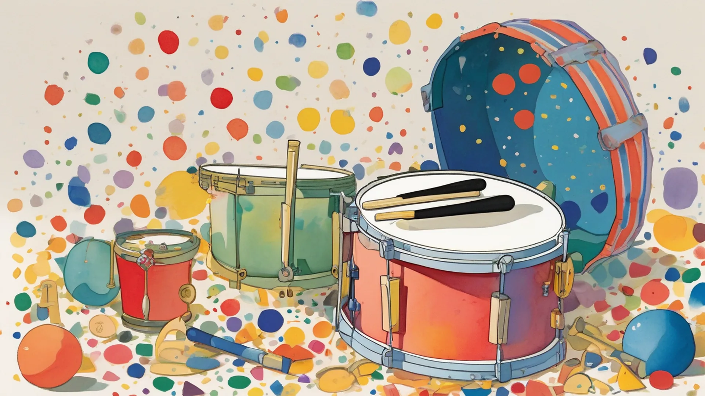
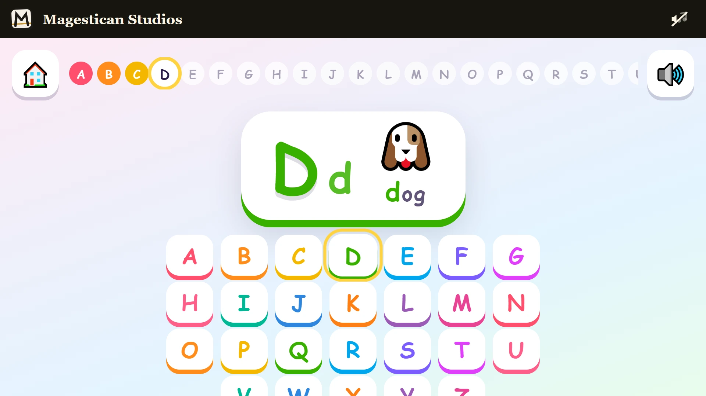
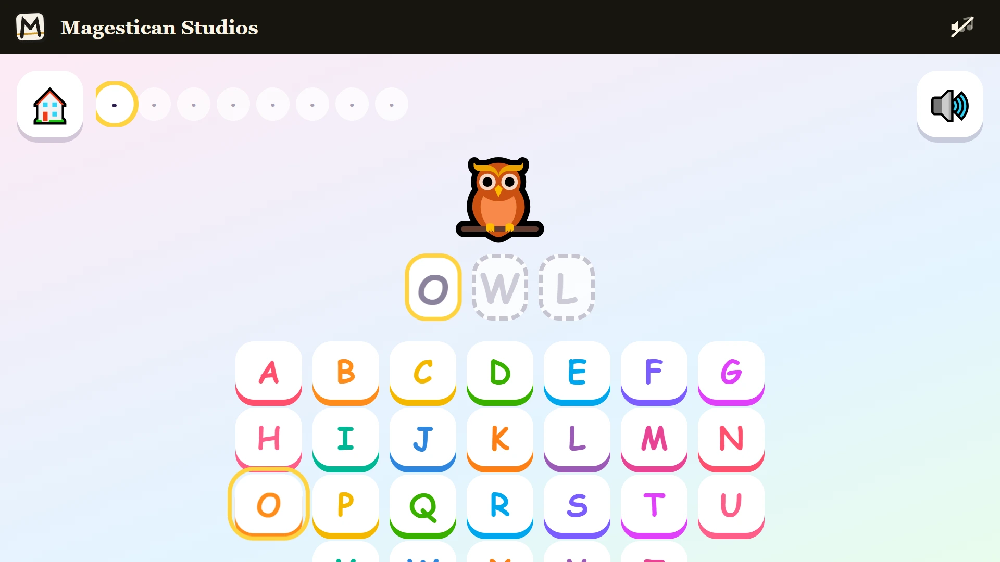

ABC Jam — an alphabet and typing game for kids
ABC Jam is an alphabet and typing game for children of about three to seven, made to be played with a parent nearby. Every letter a child presses is read aloud and plays a note, so typing the alphabet plays a song. It runs in the browser on a laptop or a tablet, it is free, and there is nothing to download and no account to make.


Sound and the song
The game is built to be heard, so turn the sound on. A voice reads each letter and each word aloud, using the speech voice that comes with the browser, in English. Every right letter plays a note, and all the notes sit in the same key as the music, so whatever a child types sounds like part of the tune. The music is a song written for ABC Jam. The music switch in the bar at the top turns it on and off, and it drops quieter whenever the voice speaks.
Keys and the screen keyboard
A child can use the keys of a real keyboard or tap the large buttons shown on screen. Those on-screen buttons come in two layouts. ABC puts them in alphabet order, which suits a child who is still learning the letters. Keyboard puts them where they sit on a laptop, which suits a child who is starting to type. One button swaps between the two.
ABC Parade
Play starts the ABC Parade, which walks from A to Z in order. Each letter appears with a picture, and the voice says a short phrase such as "A is for apple". X is the odd one out, since few words a small child knows start with it, so the voice says that X is at the end of fox. Each of the 26 letters plays the next note of one tune, so a child who reaches Z has played the whole song. After the letters E, J, O and T there is a small party with confetti and a cheer, and Z ends the parade with the biggest one. The game remembers how far a child got, so the parade can carry on another day.
When a child presses the wrong key
Nothing goes wrong in ABC Jam. There is no buzzer, no red cross and no lost point. A first miss makes the correct key light up. A second makes it hop while the voice repeats the letter. From the third miss onwards, an arrow points at it and waits. There is no clock in the parade or in Word Builder, and there is no lose screen anywhere, so a child can take as long as they need.
Free Jam
Free Jam is for the youngest players and for anyone who wants to bang on the keys. Whatever letter a child hits is the right one: up comes that letter with its picture, the voice says its word, and its note plays. Every 15 letters there is a party.
Word Builder
Word Builder moves from letters to whole words in three steps: three-letter words, then four, then five. Each step has 16 words, all things a young child can picture, such as cat, frog and zebra. A round is eight of them in a mixed order. The picture shows, the voice says the word, and the empty slots fill one letter at a time. Every correct letter adds a note to a little tune that climbs as the word grows, and the final letter lands it. When the word is done, the voice says it again and the picture grows and dances.
Letter Rain
In Letter Rain the letters come to the child. Balloons with letters on them float up the screen, never more than three at once. A child pops one by pressing its letter or by tapping the balloon. Each balloon drifts for 11 seconds from bottom to top. A run of pops makes them a little quicker, but never faster than seven seconds. One that drifts off the top comes back in at the bottom, so a missed letter simply comes round again. Every 10 pops earns a star.
The Sticker Book
Every letter met in the parade and every word finished in Word Builder adds a sticker to the Sticker Book, and the stars and the number of balloons popped in Letter Rain sit beside them. The book is saved in the browser on that device and is never sent anywhere, so it stays with the laptop or tablet the child plays on.
What is not done yet
The picture on this page is a stand-in until the game has its own artwork. The game speaks English only, with a US English voice. We have not yet watched a child play it, so the timing and the size of the keys come from our design notes, not from watching real players. The music has not yet been heard and judged by the person who asked for the game. This site counts visits and plays with a stripped-down form of Google Analytics that stores no cookie or device identifier, and it does not count children.
More like this: Free word games